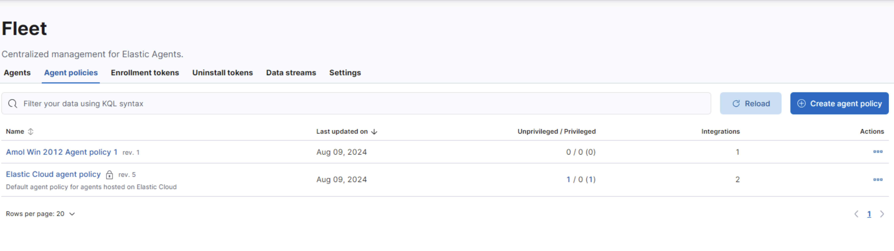
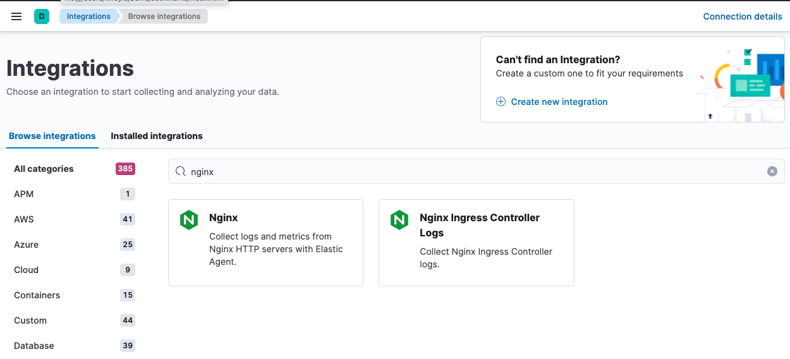
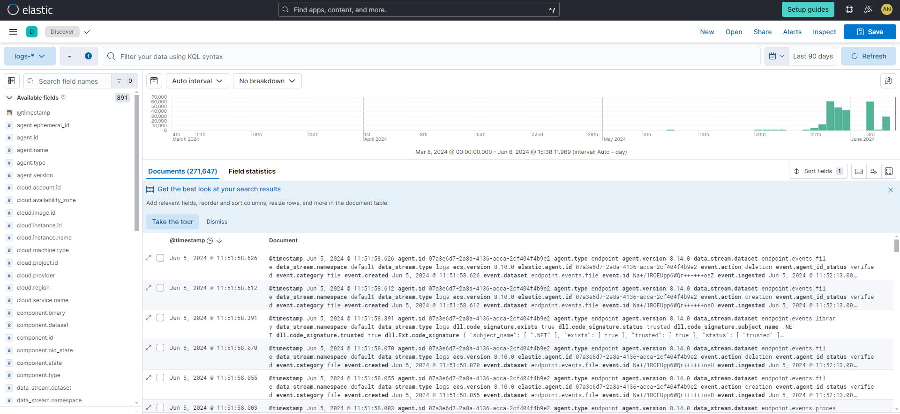
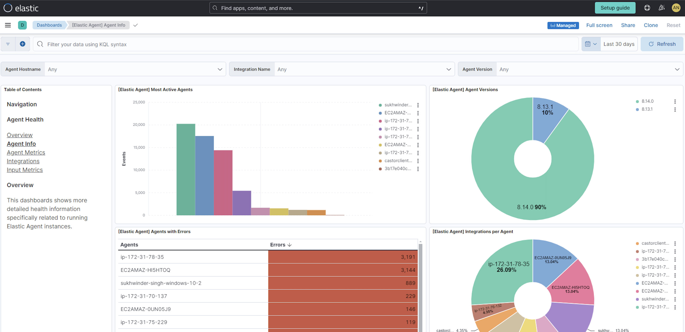

Example: Use standalone Elastic Agent with Elasticsearch Service to monitor nginxedit
This guide walks you through a simple monitoring scenario so you can learn the basics of setting up standalone Elastic Agent, using it to work with Elasticsearch Service and an Elastic integration.
Following these steps, you’ll deploy the Elastic Stack, install a standalone Elastic Agent on a host to monitor an nginx web server instance, and access visualizations based on the collected logs.
Prerequisitesedit
To get started, you need:
- An internet connection and an email address for your Elastic Cloud trial.
- A Linux host machine on which you’ll install an nginx web server. The commands in this guide use an Ubuntu image but any Linux distribution should be fine.
Step 1: Install nginxedit
To start, we’ll set up a basic nginx web server.
-
Run the following command on an Ubuntu Linux host, or refer to the nginx install documentation for the command appropriate to your operating system.
sudo apt install nginx
-
Open a web browser and visit your host machine’s external URL, for example
http://192.168.64.17/. You should see the nginx welcome message.
Step 2: Create an Elastic Cloud deploymentedit
If you’ve already signed up for a trial deployment you can skip this step.
Now that your web server is running, let’s get set up to monitor it in Elastic Cloud. An Elastic Cloud Elasticsearch Service deployment offers you all of the features of the Elastic Stack as a hosted service. To test drive your first deployment, sign up for a free Elastic Cloud trial:
- Go to our Elastic Cloud Trial page.
-
Enter your email address and a password.

- After you’ve logged in, select Create deployment and give your deployment a name. You can leave the default options or select a different cloud provider, region, hardware profile, or version.
- Select Create deployment.
-
While the deployment sets up, make a note of your
elasticsuperuser password and keep it in a safe place. - Once the deployment is ready, select Continue. At this point, you access Kibana and a selection of setup guides.
Step 3: Create an Elastic Cloud API keyedit
- From the Kibana menu and go to Stack Management → API keys.
- Select Create API key.
-
Give the key a name, for example
nginx example API key. - Leave the other default options and select Create API key.
-
In the Create API key confirmation dialog, change the dropdown menu setting from
EncodedtoBeats. This sets the API key format for communication between Elastic Agent (which is based on Beats) and Elasticsearch. - Copy the generated API key and store it in a safe place. You’ll use it in a later step.
Step 4: Create an Elastic Agent policyedit
Elastic Agent is a single, unified way to add monitoring for logs, metrics, and other types of data to a host. It can also protect hosts from security threats, query data from operating systems, and more. A single agent makes it easy and fast to deploy monitoring across your infrastructure. Each agent has a single policy (a collection of input settings) that you can update to add integrations for new data sources, security protections, and more.
-
When your Elastic Cloud deployment is ready, open the Kibana menu and go to Fleet → Agent policies.
 - Click Create agent policy.
-
Give your policy a name. For this example we’ll call it
nginx-policy. - Leave Collect system logs and metrics selected.
-
Click Create agent policy.

Step 5: Add the Nginx Integrationedit
Elastic integrations are a streamlined way to connect your data from popular services and platforms to the Elastic Stack, including nginx.
-
From the Fleet → Agent policies tab, click the link for your new
nginx-policy.
-
Note that the System integration (
system-1) is included because you opted earlier to collect system logs and metrics. - Click Add integration.
-
On the Integrations page search for "nginx".
 - Select the Nginx card.
- Click Add Nginx.
- Click the link to Add integration only (skip agent installation). You’ll install standalone Elastic Agent in a later step.
-
Here, you can select options such as the paths to where your nginx logs are stored, whether or not to collect metrics data, and various other settings.
For now, leave all of the default settings and click Save and continue to add the Nginx integration to your
nginx-policypolicy.
-
In the confirmation dialog, select to Add Elastic Agent later.

Step 6: Configure standalone Elastic Agentedit
Rather than opt for Fleet to centrally manage Elastic Agent, you’ll configure an agent to run in standalone mode, so it will be managed by hand.
- In Fleet, open the Agents tab and click Add agent.
-
For the What type of host are you adding? step, select
nginx-policyfrom the drop-down menu if it’s not already selected. -
For the Enroll in Fleet? step, select Run standalone.

-
For the Configure the agent step, choose Download Policy. Save the
elastic-agent.ymlfile to a directory on the host where you’ll install nginx for monitoring.Have a look inside the policy file and notice that it contains all of the input, output, and other settings for the Nginx and System integrations. If you already have a standalone agent installed on a host with an existing Elastic Agent policy, you can use the method described here to add a new integration. Just add the settings from the Configure the agent step to your existing
elastic-agent.ymlfile. -
For the Install Elastic Agent on your host step, select the tab for your host operating system and run the commands on your host.

Elastic Agent commands need to be run as
root. You can prefix each agent command withsudoor you can start a new shell asrootby runningsudo su.If you’re prompted with
Elastic Agent will be installed at {installation location} and will run as a service. Do you want to continue?answerYes.If you’re prompted with
Do you want to enroll this Agent into Fleet?answerno. -
You can run the
statuscommand to confirm that Elastic Agent is running.elastic-agent status ┌─ fleet │ └─ status: (STOPPED) Not enrolled into Fleet └─ elastic-agent └─ status: (HEALTHY) Running
Since you’re running the agent in standalone mode the
Not enrolled into Fleetmessage is expected. -
Open the
elastic-agent.ymlpolicy file that you saved. -
Near the top of the file, replace:
username: '${ES_USERNAME}' password: '${ES_PASSWORD}'with:
api_key: '<your-api-key>'
where
your-api-keyis the API key that you generated in Step 3: Create an Elastic Cloud API key. -
Find the location of the default
elastic-agent.ymlpolicy file that is included in your Elastic Agent install. Install directories for each platform are described in Installation layout. In our example Ubuntu image the default policy file can be found in/etc/elastic-agent/elastic-agent.yml. -
Replace the default policy file with the version that you downloaded and updated. For example:
cp /home/ubuntu/homedir/downloads/elastic-agent.yml /etc/elastic-agent/elastic-agent.yml
You may need to prefix the
cpcommand withsudofor the permission required to replace the default file.By default, Elastic Agent monitors the configuration file and reloads the configuration automatically when
elastic-agent.ymlis updated. -
Run the
statuscommand again, this time with the--output yamloption which provides structured and much more detailed output. See theelastic-agent statuscommand documentation for more details.elastic-agent status --output yaml
The results show you the agent status together with details about the running components, which correspond to the inputs and outputs defined for the integrations that have been added to the Elastic Agent policy, in this case the System and Nginx Integrations.
-
At the top of the command output, the
infosection contains details about the agent instance. Make a note of the agent ID. In this example the ID is4779b439-1130-4841-a878-e3d7d1a457d0. You’ll use that ID in the next section.elastic-agent status --output yaml info: id: 4779b439-1130-4841-a878-e3d7d1a457d0 version: 8.9.1 commit: 5640f50143410fe33b292c9f8b584117c7c8f188 build_time: 2023-08-10 17:04:04 +0000 UTC snapshot: false state: 2 message: Running
Step 7: Confirm that your Elastic Agent data is flowingedit
Now that Elastic Agent is running, it’s time to confirm that the agent data is flowing into Elasticsearch.
-
Check that Elastic Agent logs are flowing.
- Open the Kibana menu and go to Analytics → Discover.
-
In the KQL query bar, enter the query
agent.id : "{agent-id}"where{agent-id}is the ID you retrieved from theelastic-agent status --output yamlcommand. For example:agent.id : "4779b439-1130-4841-a878-e3d7d1a457d0".If Elastic Agent has connected successfully with your Elastic Cloud deployment, the agent logs should be flowing into Elasticsearch and visible in Kibana Discover.

-
Check that Elastic Agent metrics are flowing.
- Open the Kibana menu and go to Analytics → Dashboard.
-
In the search field, search for
Elastic Agentand select[Elastic Agent] Agent metricsin the results.like the agent logs, the agent metrics should be flowing into Elasticsearch and visible in Kibana Dashboard. You can view metrics on CPU usage, memory usage, open handles, events rate, and more.

Step 8: View your system dataedit
In the step to create an Elastic Agent policy you chose to collect system logs and metrics, so you can access those now.
-
View your system logs.
- Open the Kibana menu and go to Management → Integrations → Installed integrations.
- Select the System card and open the Assets tab. This is a quick way to access all of the dashboards, saved searches, and visualizations that come with each integration.
-
Select
[Logs System] Syslog dashboard. -
Select the calandar icon and change the time setting to
Today. The Kibana Dashboard shows visualizations of Syslog events, hostnames and processes, and more.
-
View your system metrics.
- Return to Management → Integrations → Installed integrations.
- Select the System card and open the Assets tab.
-
This time, select
[Metrics System] Host overview. -
Select the calandar icon and change the time setting to
Today. The Kibana Dashboard shows visualizations of host metrics including CPU usage, memory usage, running processes, and others.
Step 9: View your nginx logging dataedit
Now let’s view your nginx logging data.
- Open the Kibana menu and go to Management → Integrations → Installed integrations.
- Select the Nginx card and open the Assets tab.
-
Select
[Logs Nginx] Overview. The Kibana Dashboard opens with geographical log details, response codes and errors over time, top pages, and more.
-
Refresh your nginx web page several times to update the logging data. You can also try accessing the nginx page from different web browsers. After a minute or so, the
Browsers breakdownvisualization shows the respective volume of requests from the different browser types.
Congratulations! You have successfully set up monitoring for nginx using standalone Elastic Agent and an Elastic Cloud deployment.
What’s next?edit
- Learn more about Fleet and Elastic Agent.
- Learn more about Integrations.